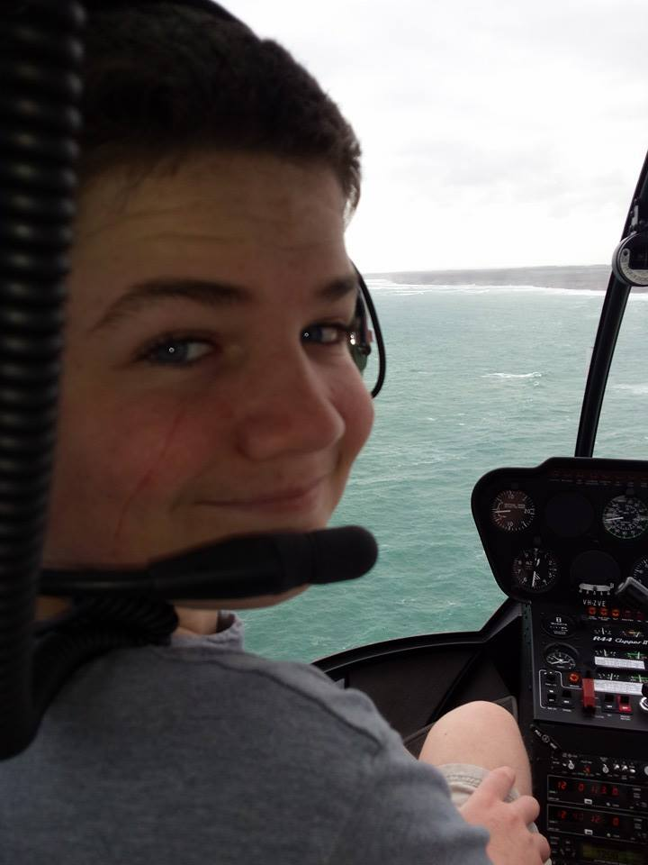
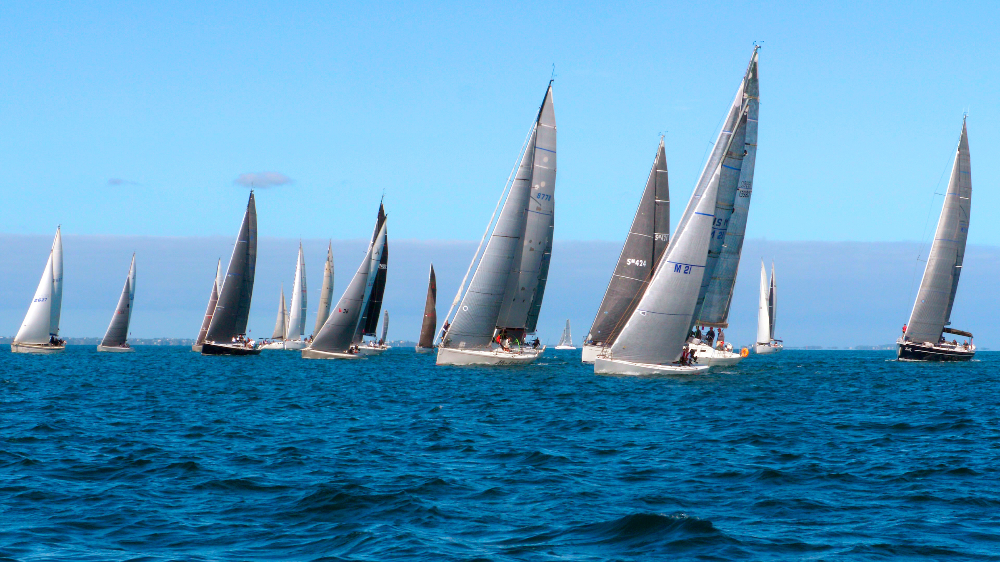
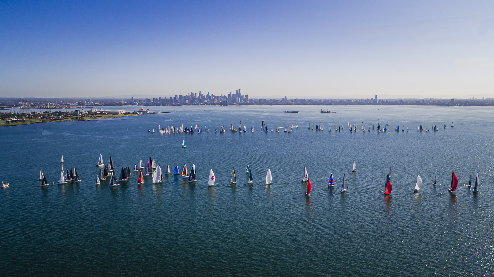

Hello! my name is Rod Warner and i am a student studying I.T at RMIT, my student number is s3912749 and my student email is S3912749@student.rmit.edu.au, I am from Australia. My main hobbies are Sailing and Gaming, i sail on a Bavaria 42 match, benetau 41.1 preformence and a Swan 65 Ketch. My other main hobby is gaming, where i primarily play a game called Eve Online, where i have held leadership roles in a group of over 100 thousand people. I also have an avid interest in cars, particuarly german cars where i am currently in the process of buying my first car, a Mercedes-Benz S500.
My interest in I.T stems from when i was a young kid playing games on my Computer, i would always find it fun to mess around with the games code and cause funny things to happen (Later on i found out this was called Modding). I went onto building my own PC and even making my own basic games from scratch in game engines like RPG Maker and GameMaker Studio. What made me decide to take on I.T as a profession happend last year during lockdown, when a a friend of mine in England who built his own drone and showed it to me via a video call. he let me take control of the drone from my house here in Australia and flew it around a park in England. It was one of the coolest things to fly a real drone around a real place on the otherside of the world in realtime. I decided from then on that working with I.T was what i really wanted to do

An ideal job for me would be to work in the Maritime Industry specialising in I.T, Modern boats are very reliant on I.T for Navigation, Communication, Organisation, Automation. In the defence force most combat systems are digital, such as Radar, missile guidance systems, sonar, encryption and many others.
Here is an example of one of those jobs on SEEK. My Ideal job within the maritime industry would be working with Cyber Security, such as with the Navy or in Port Security. Cyber Crime is a huge threat to the maritime industry. A cyber attack against a port which disables port opperations could cause an economy to collapse, or even cause a world recession like we saw in 2008. The job linked above is for a I.T administrator for Ports and Airports in Tasmania. The job involves managing the I.T systems for 11 ports and 1 airport in Tasmania, such a job would involve leading a team of I.T professionals to ensure that systems run smoothly and help quickly fix problems such as equipment failure, software failure, or cyber threats. The job would also involve working with law enforcement to ensure that criminal activities are prevented. Such a job appeals to me because i would be exposed to advanced technologies surrounding the maritime industry which i could use to help me with my own Sailing, as maintaining the electronics onboard a yacht can cost hundreds of thousands of dollars per year, experience and the knowledge to DIY would make sailing far more affordable long term.
This job would require formal qualifications in I.T, such as a Bachelors or Masters in I.T and many years practical experience. Managing the I.T systems for ports and airports would make me responsible for border security and the safety of airplane passengers, such a job obviously requires high standards of knowledge in I.T and the many daily problems that are faced by airports and ports. While i may have many years experience toying around with Technology and programming it hardly qualifies as suitable experience for managing a port, and nor do i have the formal qualifications required to do so either. I am studying this I.T course as a step forward towards solving these problems. I hope to gain some more practical experience working as a Pen Tester part time in the next few years, i am studying a Cert IV in Cyber Security at RMIT aswel as this I.T course, i hope that the Cert IV can lead to some part time employment that will give me practical on-the-job I.T experience.
According to the 16personalities test, i have a INTJ personality type. Which according to the website means i analyse everything around me. The website lists some well known individuals (real and fictional) to have the same personality type, such as Elon musk, Christopher Nolan, Vladimir Putin, Walter White and Jim Moriarty. It is also one of the rarest personality types, with a strong focus on independence and versitility. INTJ's are reported to have poor emotional skills and can be over-critical to a problamatic degree. INTJ's also like to work alone and often have problems communicating effectively while working. a good example is with my leadership role in Eve Online managing a group of 100 thousand people i do my work best by "going away" for a few hours and comming abck with work being done, as opposed to working with a team and communicating and co-ordernating. Such as being presented with problems, such as economic or industrial issues, i will go away for a few hours, make a spreadsheet and work things out and come back with sollutions.
The learning style test reports i have a kinesthetic learning style, which states that i learn better doing things myself as opposed to listening or watching others, I happen to agree with this assessment, as i always struggled in school going to classes, however in year 10 when i moved to Distance Education i started to excel and do better once i was left to my own devices. I like to find my own way to do things and develop my own understanding of what ive learnt, as opposed to learning someone elses way and understanding.
The third test i have done is the Big Five Personality test, which attempts to evaluate Openess, Conscientiouness, Extraversion, Agreeableness and Neuroticism. The results of the test are as follows:
Openness: 29%
Conscientiouness: 65%
Extraversion: 17%
Agreeableness: 31%
Neuroticisim: 50%
The main thing i understand from this test is that i am clearly not an Extravert, which i am definately not. The results also claim i am very goal orientated and Organised and sensitive to stress. I agree with the claim i am an introvert, however i entirely disagree with the claim of my sensitivity to stress. Sailing is amongst the most stressful sports in the world with life and death situations being possible at any point (And they do happen). i also work in a resturant kitchen 6 days a week, which is a very high stress envirment as many may have heard the yelling and screaming in kitchens at restuants. I would argue i am very resistant to stress, as opposed to being fairly sensitive to it.
These results would seem to indicate i wouldnt work well in a team. With the Big Five test showing i am not agreeable or open, my learning style suggests i learn best on my own and my personality type suggesting i work best alone, analysing everything in my own head as opposed to communicating as a team. While i agree with some of these points, i can work extremily well in a team with the right people. It is impossible to manage 100 thousand people by myself and there is a large team of a hundreds of people i work with in doing so, Teamwork while sailing is crucial and bad teamwork and communication can lead to fatal outcomes. I hold the belief that a team can always work well with the right group of people, but a team of the wrong people will always go wrong. This is a good AMA from years ago about the complexities of running a large online gaming organisation.
I hold these results to little regard, there is very little to no scientific evidence to back up the validity of these sorts of tests, particuarly the Myers-Briggs test. They are cool internet gimmicks that can provide relateable test results, but there is a common phrase "A broken clock is still right twice a day" which i feel applies. There is a video made by the developer of one of these sorts of tests (Albiet a far more basic/simple one that tried to guess where you live, the arguements are still valid about the scientific reasoning) here is the link to that video. I would not pick a team of people based on the results of these tests, but rather decide based on character judgement in person.

My Project idea is to develop a fixed wing drone that could be used by sailors during races for the purpose of finding wind in real time. There are many weather prediction algorithms and information provided by satellites for weather reporting. However, at sea they are very limited in accuracy for more precise real time data at exact points in the ocean. My idea is to have a remote-control Drone that can fly around a ~30-40km area to get an exact weather report in the nearby area. This would provide an enormous benefit for yacht racing as it is currently impossible to tell where the strongest wind is in a localized area in the ocean. Such a drone would also contribute to saving lives when people fall overboard at sea
This would be really useful for myself and other sailors as on days of little wind we spend a lot of time looking for signs of wind elsewhere (Ripples on the water). Having a drone that is equipped with weather monitoring equipment would allow us to help us make better decisions on how to go faster and do better in races. Such equipment would help with beating world records such as the Sydney to Hobart record of 1:09:15:24 or the Trans-Atlantic record of 5:14:21:25, wind speeds can change drastically over short distances and current weather prediction technology cannot predict exactly were, a drone with real time information could. This knowledge would allow yachts to go much faster
The drone would be able to tell the operator the wind speed, direction, humidity, swell height, wave direction, temperature, water temperature, cloud coverage also the location, speed and direction of other yachts in the race and most importantly, eyes in the sky during a man overboard emergency. Knowing the local weather in a yacht race is paramount to winning, the wind speed difference a kilometer apart can be the difference between winning and losing. Out in port Phillip bay the marks that are used for racing are often upwind, which is called the “no go zone” in sailing, a zone where the wind angle is to high and sailing yachts cannot gain momentum. This means that the skipper must make the critical decision of going left or right (Port or Starboard). Knowing the wind speeds in both directions would greatly help the skipper make said decision, the direction of the wind is also important as strong wind in the wrong direction can be worse than light wind in the right direction. Knowing swell height is also a critical piece of information for a skipper, waves can act like walls to a boat, so every time you hit a wave its like hitting a wall. So knowing where smaller waves are can also be crucial to winning a race. The direction of the waves can also have a huge impact on performance in a race, it can be very difficult to see waves moving in a different direction at sea, as view is often hindered by the more immediate waves nearby. Knowing the water temperature can also be of huge benefit, colder water is more dense and thus harder to hit, this plays into what was discussed earlier about waves being like walls, the colder the wave the harder the wall. Arguably the most valuable feature, although hopefully never needed is that a drone could help find crew members who have fallen overboard using an infrared camera. Man overboard situations are very serious and can often turn deadly very quickly, if a person goes overboard at sea they may die from hyperthermia in 5-10 minutes. Spotting people who have fallen overboard can be very difficult due to swells and can often take more than 5-10 minutes just to get someone back onboard once you have found them. Having a drone to help locate a missing crew member using a Infrared camera which searches for heat (body heat) could save many lives at sea. Many larger vessels may choose to have a drone like this onboard simply for that purpose alone. The drone could also assist vessels find other vessels in distress, such as when a mayday is called. The 1998 Sydney to Hobart was notorious for its bad weather and many people died, and multiple boats sank/needed help. Helicopters and rescue efforts were hindered by the bad weather and poor visibility, having other vessels (other yachts in the race) being equipped with a drone that can search at further distances than the eye can see would help find vessels in distress much more efficiently. The curvature of the earth is a big problem finding vessels in distress at sea, having eyes at higher altitudes could help that significantly.
A drone like this would require a lot of knowledge and experience to build, it would need to have an automated flight algorithm, long range radio for remote control and video transmission, control software, equipment for the operator to use (remote control) a long-lasting battery, weather monitoring equipment, infrared camera and develop a means to land the drone on a moving yacht. A fixed wing drone would be very difficult to land on a yacht. These technologies already exist and are relatively easy to get, however they can also be very expensive which is a big reason no one has developed a drone like this before, at least for the open market.
The skills I would require building this drone would take years to acquire, if I where to employ help I would require an aerospace engineer. We would need to write a automated flight algorithm and a API to remotely control it. A API would be very useful as every yacht is different and allowing them to integrate the drone into there systems would be more beneficial than having a pre-made control unit. I would require the assistance of an Aerospace engineer to design the drone to be aerodynamic and also able to carry the gear required for its job, I would also need assistance writing an automated flight algorithm as such an algorithm would require knowledge of flight mechanics. I would also require skills in electronic engineering to ensure I know how to design and operate its electrical functions, such as the camera, the radio and weather monitoring equipment.
A drone like this would be liked by many of the larger vessels, such as those operated by companies who have high standards of safety for man overboard situations. However, for smaller racing vessels the cost of a drone might be considered to high, but as technology develops it may one day become a requirement for long ocean racing to help with man overboard situations. Its purpose as a weather drone would also be favored by the most serious and well-funded racing teams, such as those in the Volvo Ocean race or the super maxis in the Sydney to Hobart race. If the drone is a market success, then its very possible that deaths from drowning would be seriously reduced at sea. And that yacht racing might become far more competitive due to more awareness of the local weather. In the image at the top of this section, showing the two lines of yachts. On the left hand side you can see flat patches of water, those are infact pockets of still wind, where the wind simply isn’t moving. Even in a simple ariel picture I can show the benefits of what this drone would provide. I hope to one day build a drone like this, regardless of my studies or qualifications. It would be a significant help with my sailing adventures.
Recent Comments